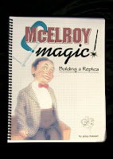
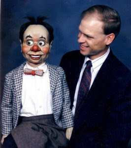
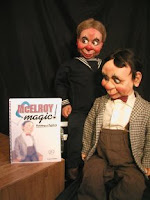

McElroy Magic - WIN this amazing book!
1/29/2010
{kind=link}

In 2007 Greg Claassen authored this amazing book filled with photos and information about the rare, oft-envied, McElroy figures. I've read it once just for the information, history, and background on Glenn and George McElroy and the incredible figures they built. I read it a second time just to study the amazingly detailed drawings of the individual mechanics for each animation and the description of how they can be replicated. And before shipping the book to the winner of this give-away, I'll page through it again, just to review and enjoy one final time the experience of the McElroy "magic". (Fred Maher's popular Skinny Dugan, even found his way into this book!)
Greg has built several McElroy replicas, true in every way to their original works. When this book was introduced in 2007 and I saw the retail price advertised, I thought it a bit "pricey". But after I actually saw the book and the professional manner in whic
{kind=link}

h it was produced, and the incredible amount of history and details included, I actually think of it now as being offered for a bargain price!The FREE book offered here, was provided by author who signed the copy.
Knowing the book has little value to some, but would be priceless to others, I will not use a drawing to determine the winner of "McElroy Magic." Rather, I will ask any of you who would like to receive this copy FREE, to Contact me and
{kind=link}

tell me why I should award it to you. From your emails, I'll pick a winner. NOTE: Contest now closed to entries. Winner to be announced 2/2/10.And if you choose not to wait, or to participate in the contest, you can purchase a copy of McElroy Magic from Greg's website: http://gregclaassen.com/For_Sale.html
On Greg's site you will also find additional information about this book as well as the McElroy replicas Greg builds.
Enjoy!